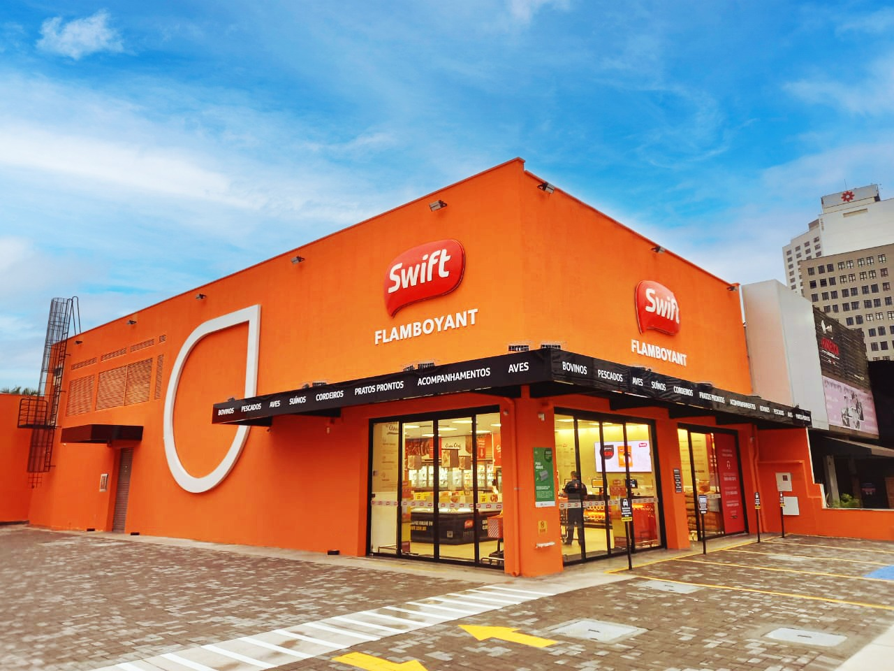
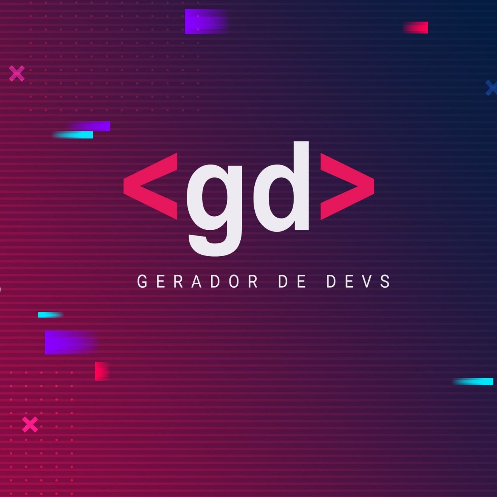
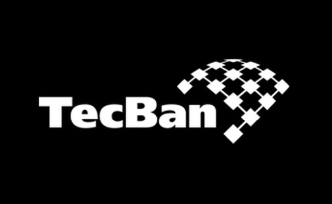

Minha jornada inicial com Java e microsserviços marcou meu mergulho profundo no mundo do desenvolvimento backend. Desde então, naveguei com destreza pelas correntes turbulentas dos códigos e pipelines de CI/CD.
Na Swift, mergulhei em uma arquitetura compacta, refletindo a agilidade das APIs e construções em nuvem. Trabalhamos com um arsenal tecnológico que incluía Java 8, Docker e uma pitada de AWS Secret Manager e Cognito. Ah, e não podemos esquecer o SQS - nosso fiel mensageiro na batalha da comunicação inter-serviços.
Como desenvolvedor backend em tempo integral, minha missão era criar microserviços e APIs que atuassem como maestros regendo uma orquestra de empresas de transporte. Desde a rabugenta Rabbi até a ágil Box Delivery, cada uma tinha seu papel na sinfonia da entrega. Minha tarefa? Mapear a jornada do cliente, do clique no site ao sorriso de satisfação na entrega - tudo devidamente registrado em nosso MongoDB.
A nuvem? Bem, deixamos isso para o especialista dedicado - afinal, precisamos de alguém para manter nossas cabeças nas nuvens enquanto mantemos os pés firmemente plantados no código.
E assim, entre um café e um deploy, aprendi que no universo dos microsserviços, a agilidade é a moeda da vez e o humor, nosso escudo contra os bugs inesperados. Quer uma entrega rápida? Conte comigo - mas aviso desde já: minhas APIs têm mais personalidade do que um bot de atendimento automático!

Na GD, mergulhei em um oceano de oportunidades e cursos. Foi lá que me tornei um mestre do Scrum e do framework ágil, e até mesmo arrisquei minhas habilidades como PO. Não se engane, balancear esses chapéus é uma arte - às vezes me sentia mais equilibrista do que desenvolvedor!
Desde então, tenho sido o comandante do Team Backlog, liderando projetos com a graça de um Jedi no controle de sua Força. Organizando reuniões de sprint com a precisão de um mestre relojoeiro e sendo a bússola que guia a equipe em direção às prioridades do projeto.
Mas não se engane, não sou apenas um mestre do Scrum - sou também um ninja da qualidade! Garanto que cada entrega de produto seja tão impecável quanto o código que escrevo.
E assim, entre uma sprint e outra, mantenho o humor afiado e a mente aberta - afinal, no universo do desenvolvimento, a agilidade é tão importante quanto uma boa piada! Então, se precisar de um desenvolvedor ágil e com um toque de humor, conte comigo - estarei pronto para qualquer desafio que surgir no caminho!
Ah, o mundo do suporte - onde cada erro é uma oportunidade para brilhar! Fui convocado pela equipe de suporte para uma missão crucial: prevenir erros antes mesmo que aconteçam. Como um verdadeiro guardião da estabilidade, mergulhei de cabeça no monitoramento minucioso de todas as APIs sob minha tutela.
Armado com uma variedade de ferramentas de monitoramento, desde os clássicos até os mais exóticos - Zabbix, Kibana, Sensedia, Prometheus, e por aí vai - eu observava cada movimento, como um mestre zen contemplando o fluxo do rio.
Meu trabalho? Identificar os pequenos deslizes antes que se tornassem grandes problemas e direcioná-los para as áreas adequadas, como um maestro regendo uma sinfonia de correções. Com minha visão afiada e meu olhar atento, nenhum erro passava despercebido - eu os capturava antes mesmo que tivessem a chance de causar estragos.
E assim, entre alertas e relatórios, eu me tornei o guardião dos bits e bytes, o protetor da estabilidade digital. Porque, afinal, no mundo do suporte, não há problema grande demais que não possa ser resolvido com um pouco de monitoramento inteligente e uma boa dose de humor!

Ah, os dias de aventura como "Consultor PJ" no Banco Tecban ou Banco 24h, desbravando os horizontes desconhecidos da inovação e da segurança digital! Lá, entre os bastidores da revolução tecnológica, embarquei em uma jornada épica, moldando o futuro com a coragem de um pioneiro moderno.
Como um verdadeiro arquiteto da segurança, ajudei a erguer imponentes sistemas de proteção, utilizando tecnologias de reconhecimento facial para guardar as portas do banco como verdadeiros sentinelas digitais. Cada linha de código era uma barreira contra os perigos do ciberespaço, cada algoritmo uma muralha inexpugnável contra as ameaças virtuais.
E não para por aí! Como um mestre das relações humanas, ajudei a montar os esquadrões internos, reunindo uma equipe de elite dedicada à defesa dos ativos mais preciosos do banco: seus dados e sua reputação. Com a sabedoria do Scrum Master, conduzi cada equipe com maestria, apresentando o método ágil Scrum com a profundidade de um sábio oriental.
Mas como em toda grande aventura, houve reviravoltas inesperadas. Em meio aos desafios e às vitórias, nosso projeto foi amalgamado a outras áreas, e alguns consultores foram desligados. Mas mesmo diante das adversidades, nosso legado de inovação e segurança permaneceu, como uma luz guia para os que viriam depois de nós.
E assim, entre os altos e baixos, aprendi que na jornada da inovação, cada obstáculo é uma oportunidade para crescer, cada revés uma chance de reinventar-se. Então, se precisar de um guardião dos códigos e um mestre das relações, conte comigo - estarei pronto para enfrentar os desafios que o futuro nos reserva, com a coragem de um verdadeiro herói digital!
Na BMW, ocupo o cargo de Desenvolvedor Backend, contribuindo para o desenvolvimento e implementação de um projeto pioneiro desde sua concepção. Nesta posição, estou envolvido na construção e definição da infraestrutura e arquitetura do projeto do zero. Minhas responsabilidades incluem a configuração e gerenciamento de pipelines de integração contínua (CI) e entrega contínua (CD) utilizando ferramentas como Jenkins, Kubernetes e AKS.
Além disso, estou encarregado de desenvolver APIs robustas utilizando Java 17 no framework Quarkus, garantindo alta performance e escalabilidade. Integrei eficientemente o sistema com serviços de armazenamento de segredos como Secret Manager, filas de mensagens SQS e bancos de dados NoSQL como DynamoDB para garantir a segurança e integridade dos dados.
No que diz respeito ao monitoramento e gerenciamento de logs, implementei soluções de observabilidade utilizando CDLs, Kibana e Prometheus, permitindo uma visão abrangente do desempenho do sistema em tempo real. Além disso, utilizei o Nexus como repositório de artefatos e aplicações Lambda, garantindo a rastreabilidade e disponibilidade dos recursos desenvolvidos.
Destaco também a minha habilidade de comunicação em inglês, uma vez que a equipe e os stakeholders da BMW na Alemanha foram parte integrante do processo de desenvolvimento. Durante minhas oito horas diárias de trabalho, conduzi todas as comunicações em inglês de forma eficaz e colaborativa.
Além das minhas responsabilidades técnicas, tive a oportunidade de viajar para Portugal e Alemanha em diversas ocasiões, fortalecendo os laços profissionais e contribuindo para uma colaboração internacional eficiente e produtiva
Esta experiência na BMW me proporcionou uma valiosa oportunidade de desenvolvimento profissional e me permitiu adquirir habilidades e experiências significativas no desenvolvimento de projetos complexos em um ambiente corporativo de renome mundial.
Ah, as aventuras no mundo das finanças, onde cada linha de código é uma transação e cada algoritmo é uma estratégia para o sucesso! Como um Dev Fullstack Java e Angular no universo do Banco Santander, mergulhei de cabeça no setor de investimentos, onde os números fluem como rios de oportunidades e as telas do sistema são os palcos das grandes transações.
Meu trabalho é como uma dança entre as áreas, consumindo os produtos e subprodutos digitais dos investimentos e transformando-os em experiências de usuário incríveis, com a precisão de um mestre em criptografia. Cada tela do sistema é uma obra-prima de segurança e usabilidade, onde os gerentes de contas podem aplicar os investimentos de seus clientes com confiança e eficiência.
Mas não se engane, meu amigo, esse é um trabalho híbrido que requer habilidades tão diversas quanto as próprias flutuações do mercado. Entre um algoritmo e outro, preciso fazer incursões ao banco duas vezes por semana, para alinhamentos com o time e a gerência. E é lá, entre os corredores do poder financeiro, que traçamos os planos para o futuro, utilizando tecnologias como Java Camel para integrar APIs e garantir a máxima segurança em todas as transações.
Então, se precisar de um verdadeiro maestro das finanças digitais, capaz de transformar números em oportunidades e códigos em transações seguras, pode contar comigo - estarei sempre pronto para levar sua jornada de investimentos ao próximo nível, com a agilidade de um verdadeiro Dev Fullstack e a visão estratégica de um mestre das finanças!